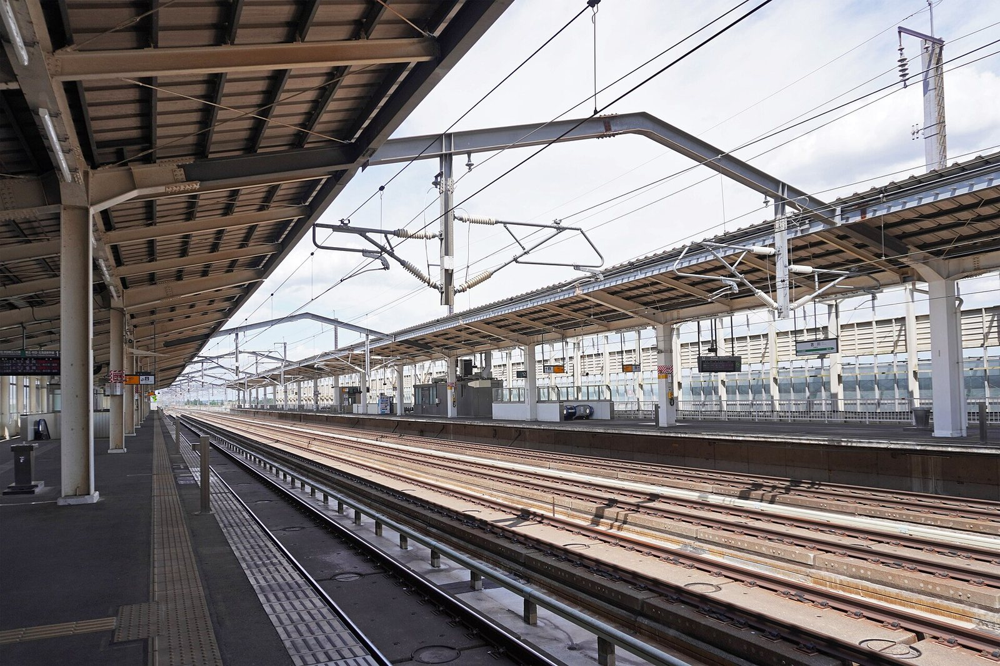
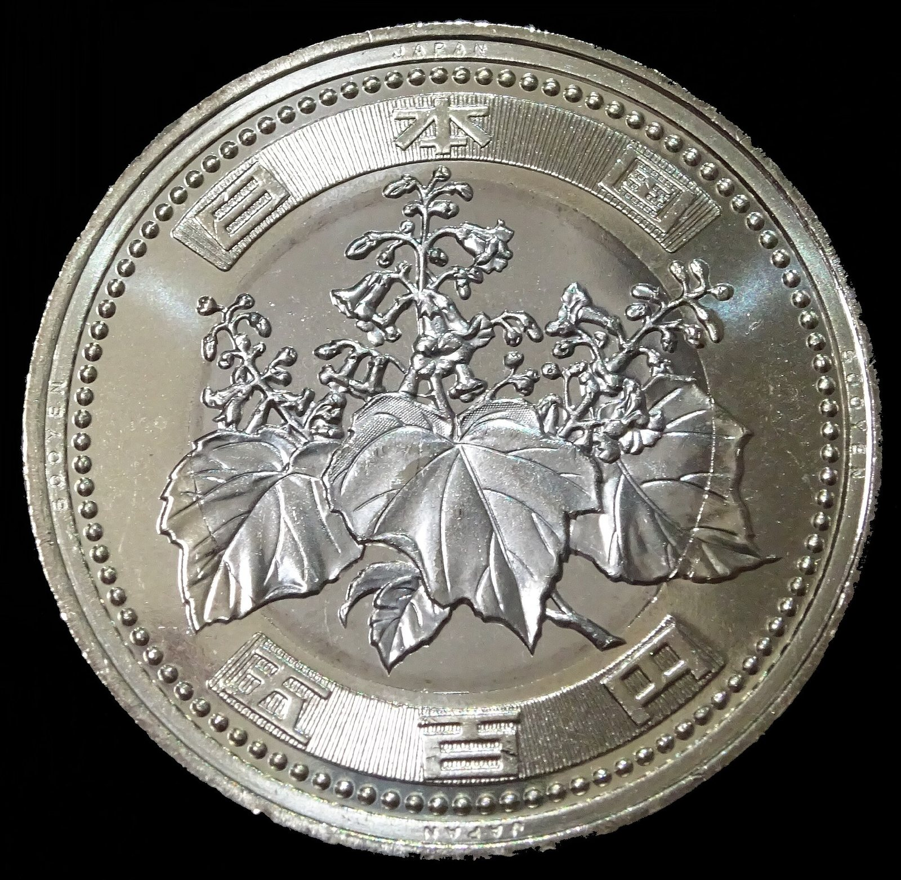
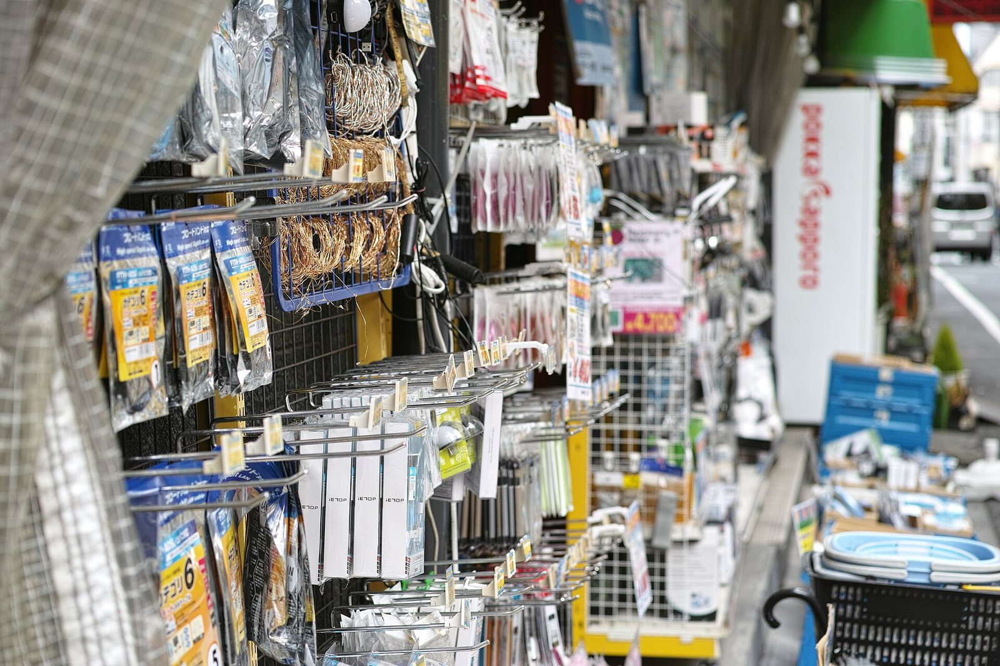
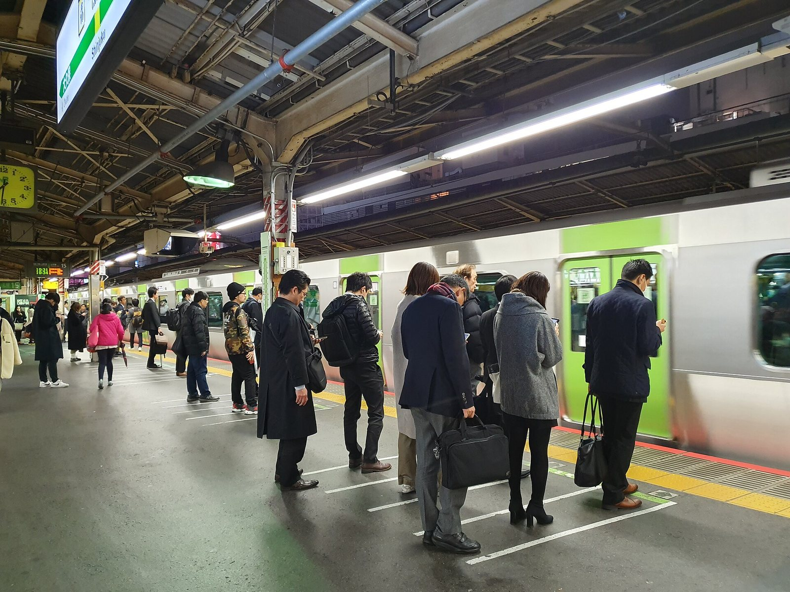
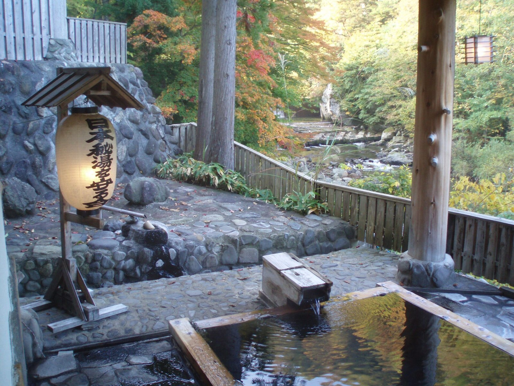
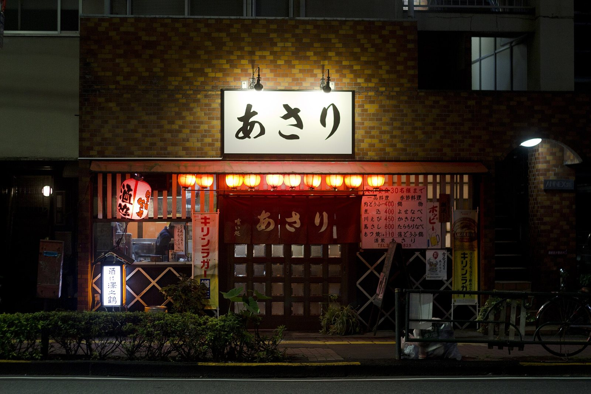

Bốn mùa, bốn Nhật Bản
Anh đào mùa xuân, pháo hoa mùa hè, lá đỏ mùa thu, tuyết trắng mùa đông — mỗi mùa là một hành trình khác nhau.
Xứ sở mặt trời mọc
Một quần đảo giữa Thái Bình Dương, nơi núi lửa và biển cả cùng nuôi dưỡng một nền văn hóa đã kiên nhẫn gìn giữ hơn một nghìn năm và vươn tầm ảnh hưởng toàn cầu.
Mỗi cuộc gặp gỡ chỉ đến một lần trong đời, nên hãy trân trọng khoảnh khắc.
Xúc cảm dịu dàng trước vẻ đẹp phù du, biết rằng mọi thứ rồi sẽ qua.
Vẻ đẹp của sự giản dị, mộc mạc và những điều không hoàn hảo.
Ánh nắng lọt qua kẽ lá, đổ xuống thành những vệt sáng lay động.
Tổng quan
Nhật Bản (日本, Nihon) là quốc đảo nằm ở rìa phía đông châu Á, trải dài hơn 3.000 km từ Hokkaido lạnh giá đến Okinawa nắng ấm.
Đây là một trong những nền kinh tế lớn nhất thế giới, đồng thời là nơi bảo tồn gần như nguyên vẹn những giá trị văn hóa truyền thống hàng nghìn năm: từ trà đạo, thư pháp, kiến trúc gỗ đến cách tổ chức lễ hội theo nhịp của tự nhiên.
Điều khiến Nhật Bản khác biệt không chỉ là công nghệ hay cảnh đẹp, mà là cách người Nhật đối xử với thời gian, với thiên nhiên và với người khác — tôn trọng, chỉn chu và đầy thiện ý. Vì thế, mỗi chuyến đi thường kết thúc bằng một mong muốn quay lại.
「一期一会」
Mỗi cuộc gặp gỡ là duy nhất — hãy sống trọn vẹn với nó.
Anh đào mùa xuân, pháo hoa mùa hè, lá đỏ mùa thu, tuyết trắng mùa đông — mỗi mùa là một hành trình khác nhau.
Từ cách gói một hộp quà, bày một khay sashimi đến lối kiến trúc tối giản, mọi thứ đều có chủ đích.
Tàu chạy đúng giờ đến từng phút, đường phố sạch sẽ, con người lịch sự — du lịch rất dễ chịu ngay cả lần đầu.
Vùng miền & điểm đến
Nhật Bản được chia thành 47 tỉnh thành, thường được nhóm thành các vùng lớn. Mỗi vùng mang một nhịp sống, khí hậu và nét ẩm thực riêng.
Đang hiển thị 8 điểm đến
Tuyết rơi dày, hải sản tươi và những cánh đồng hoa oải hương trải tới chân trời.
Vùng nông thôn yên tĩnh với lễ hội mùa hè rực rỡ, suối nước nóng và làng cổ bên sông.
Nhịp sống đô thị nhanh nhất nước Nhật: Tokyo, ánh đèn neon và những khu vườn tĩnh lặng.
Dãy Alps Nhật Bản, làng cổ Shirakawa-gō mái tranh và những thị trấn thủ công lâu đời.
Trái tim văn hóa cổ: hơn 1.000 ngôi đền ở Kyoto, nai ở Nara và ẩm thực đường phố Osaka.
Đền Itsukushima nổi trên mặt nước, vườn cảnh Okayama và con đường hành hương 88 ngôi đền.
Núi lửa còn hoạt động, suối nước nóng Beppu và tô ramen tonkotsu đậm đà xứ Fukuoka.
Biển ngọc lam, rạn san hô và văn hóa Ryūkyū riêng biệt với âm nhạc, ẩm thực và tuổi thọ cao.
Văn hóa Nhật Bản
Văn hóa Nhật Bản không chỉ nằm trong những nghi lễ cổ xưa được nâng niu gìn giữ, mà còn là nguồn cảm hứng bất tận lan tỏa khắp năm châu: từ vũ trụ Anime bùng nổ, triết lý Wabi-sabi định hình kiến trúc hiện đại đến tinh thần võ sĩ đạo và nghệ thuật Kintsugi chữa lành.
Anime · Manga · Otaku
Hiện tượng văn hóa đại chúng toàn cầu: từ Studio Ghibli, Doraemon, Dragon Ball đến One Piece, biến phố Akihabara thành thánh địa và cosplay thành ngôn ngữ kết nối giới trẻ khắp hành tinh.
Ảnh hưởng toàn cầu: Hàng trăm triệu người học tiếng Nhật qua manga; các liên hoan cosplay và bảo tàng Ghibli đón hàng triệu lượt khách quốc tế mỗi năm.
Bushidō · Budō
Tinh thần hiệp sĩ với 7 đức hạnh: Nghĩa, Dũng, Nhân, Lễ, Thành, Danh dự và Trung thành. Các môn võ Judo, Karate, Kendo, Aikido đã trở thành môn thi đấu Olympic và di sản rèn luyện nhân cách thế giới.
Ảnh hưởng toàn cầu: Hơn 40 triệu môn sinh trên toàn thế giới tập luyện Judo và Karate; triết lý tự chủ và tôn trọng đối thủ được phổ biến rộng khắp.
Wabi-sabi · Zen aesthetics
Mỹ học tìm kiếm vẻ đẹp trong những điều mộc mạc, dở dang và vô thường. Nền tảng triết lý này trực tiếp định hình trào lưu thiết kế tối giản (Minimalism), kiến trúc hiện đại thế giới và phong cách Apple.
Ảnh hưởng toàn cầu: Trở thành nguồn cảm hứng trung tâm cho các kiến trúc sư vĩ đại như Tadao Ando, Kengo Kuma và phong cách sống giản lược toàn cầu.
Nghệ thuật hàn vàng
Dùng sơn mài trộn bột vàng để hàn gắn gốm sứ vỡ vụn. Thay vì giấu giếm khiếm khuyết, Kintsugi tôn vinh vết nứt như một dấu ấn lịch sử đáng trân trọng — thông điệp chữa lành tâm hồn lay động thế giới.
Ảnh hưởng toàn cầu: Trở thành ẩn dụ tâm lý học quốc tế về sự kiên cường (resilience) và tái sinh sau biến cố cuộc đời.
Nghệ thuật gấp giấy
Nghệ thuật gấp giấy không dùng kéo hay hồ dán, biến tờ giấy phẳng thành muôn hình vạn trạng. Ngày nay, nguyên lý nếp gấp Origami được ứng dụng vào thiết kế tấm pin mặt trời vệ tinh không gian NASA và stent y tế tim mạch.
Ảnh hưởng toàn cầu: Cầu nối đột phá giữa mỹ thuật dân gian với hình học toán học, kỹ thuật hàng không vũ trụ và công nghệ nano.
Ukiyo-e · Tranh khắc gỗ
Dòng tranh khắc gỗ dân gian thế kỷ 17–19 với kiệt tác "Sóng lừng ngoài khơi Kanagawa" của Hokusai. Dòng tranh này đã khởi xướng làn sóng Japonisme cuồng nhiệt tại Tây Âu, làm thay đổi tư duy của Vincent van Gogh và Monet.
Ảnh hưởng toàn cầu: Đặt nền móng cho hội họa Ấn tượng phương Tây và là cội nguồn cảm hứng cho nghệ thuật đồ họa hiện đại.
Lòng hiếu khách đỉnh cao
Nghệ thuật tiếp đãi bằng cả trái tim thuần khiết mà không đòi hỏi đền đáp. Người phục vụ luôn tinh tế đoán trước nhu cầu của khách trước khi họ cất lời — chuẩn mực vàng của ngành dịch vụ toàn cầu.
Ảnh hưởng toàn cầu: Trở thành bài học kiểu mẫu tại các trường quản trị khách sạn hàng đầu Thụy Sĩ, Pháp và các thương hiệu xa xỉ quốc tế.
Takumi · Nghệ nhân bậc thầy
Đạo đức nghề nghiệp tận hiến: cần hơn 60.000 giờ rèn luyện để được công nhận danh hiệu Takumi. Từ rèn kiếm Katana, may đo Kimono đến sản xuất cơ khí chính xác, sự hoàn hảo đến từng micromet đã tạo nên danh tiếng "Made in Japan".
Ảnh hưởng toàn cầu: Triết lý sản xuất Kaizen và Takumi được các tập đoàn sản xuất hàng đầu thế giới áp dụng như kim chỉ nam chất lượng.
Bonsai · Karesansui
Nghệ thuật thu nhỏ vũ trụ đại ngàn vào một chậu cây cảnh hoặc một khoảnh sỏi trắng cào sóng nước. Đó là không gian chiêm nghiệm tĩnh tại, nơi con người tìm lại sự cân bằng sâu thẳm giữa cuộc sống bộn bề.
Ảnh hưởng toàn cầu: Hiệp hội Bonsai quốc tế có mặt tại hơn 80 quốc gia; nghệ thuật vườn khô Nhật Bản xuất hiện tại các bảo tàng hàng đầu thế giới.
Sadō · chanoyu
Pha và thưởng trà matcha như một nghi lễ thiền định, nơi từng động tác đều chậm rãi và quán chiếu tâm mình theo 4 nguyên tắc: Hòa (hài hòa), Kính (tôn trọng), Thanh (thanh tịnh), Tịch (an tĩnh tuyệt đối).
Kimono · Y phục truyền thống
Trang phục truyền thống với kỹ thuật dệt nhuộm thủ công tinh xảo hàng trăm năm. Từng hoa văn, chất liệu lụa và nút thắt đai Obi đều mang thông điệp về mùa màng, địa vị và nét duyên dáng phương Đông.
Sumō · Quốc võ cổ xưa
Môn võ hơn 1.500 năm tuổi gắn liền với Thần đạo: nghi lễ rải muối tẩy uế võ đài, trang phục Gyoji truyền thống và cuộc so tài sức mạnh thuần khiết nhưng thấm đượm phong thái tĩnh tâm tuyệt đối.
Thưởng hoa anh đào
Mỗi độ xuân về, hàng triệu gia đình và bạn bè trải bạt dưới tán anh đào rực rỡ để cùng thưởng thức bento, trò chuyện và chiêm nghiệm triết lý Mono no aware trước cánh hoa bay trong gió.
Lễ hội truyền thống
Không khí rộn rã với hàng vạn người rước kiệu Mikoshi qua các góc phố cổ, tiếng trống Taiko trầm hùng rung chuyển không gian, hội chợ phố đêm Yatai và những màn pháo hoa Hanabi huyền ảo mùa hạ.
Liệu pháp suối khoáng Toji
Ngâm mình trong dòng khoáng nóng tự nhiên bắt nguồn từ lòng đất núi lửa. Văn hóa tắm onsen kết hợp nghỉ dưỡng tại lữ quán Ryokan truyền thống và thưởng thức Kaiseki là đỉnh cao thư giãn của nước Nhật.
Ẩm thực
Washoku — ẩm thực truyền thống Nhật Bản — được ghi danh Di sản văn hóa phi vật thể năm 2013, nhờ sự cân bằng vị giác, tính mùa vụ và cách trình bày.
Cơm giấm cùng cá tươi, hải sản — biểu tượng ẩm thực Nhật Bản.
Mì nước dùng xương hầm, mỗi vùng một công thức riêng.
Hải sản và rau chiên giòn trong lớp bột mỏng, ăn cùng nước chấm tensuyu.
Thịt bò vân mỡ như hoa, tan chảy trong miệng khi nướng hoặc nhúng lẩu.
Bánh xèo Nhật Bản với bắp cải, thịt, hải sản, phủ sốt và mayonnaise.
Trà xanh nghiền mịn, vị đắng dịu — linh hồn của trà đạo.
Bánh bạch tuộc nướng tròn, món ăn đường phố nổi tiếng Osaka.
Mì kiều mạch thanh mát, ăn lạnh cùng nước tương hoặc nóng trong nước dùng.
Bốn mùa
Nhật Bản có bốn mùa rất rõ rệt. Cùng một địa điểm, mỗi mùa lại khoác một tấm áo khác — và mang theo vị món ăn khác.
Tháng 3 – 5 · 5–20°C · khô ráo, nắng nhẹ
Đường sakura-zensen (dự báo hoa nở) đi từ Kyushu ra Hokkaido. Khắp nơi người dân trải bạt dưới gốc cây để hanami. Đây cũng là mùa các vườn Nhật, lâu đài và đồi hoa tulip đẹp nhất.
Tháng 6 – 8 · 22–35°C · ẩm, mưa tsuyu đầu mùa
Tháng 7–9 là mùa chính thức leo núi Phú Sĩ. Khắp nước Nhật diễn ra matsuri với yukata, trống taiko và hanabi rực trời. Các bãi biển Okinawa đẹp nhất vào lúc này.
Tháng 9 – 11 · 10–25°C · trời trong, se lạnh
Momiji chuyển đỏ từ Hokkaido xuống phía nam, đẹp nhất ở Kyoto, Nikko và vùng Tohoku. Đây cũng là mùa ẩm thực phong phú nhất: nấm matsutake, hải sản, sake mới và lễ hội mùa gặt.
Tháng 12 – 2 · −5–12°C · khô, nhiều tuyết ở phía bắc
Lễ hội tuyết Sapporo, làng cổ Shirakawa-gō phủ trắng và những bồn onsen ngoài trời nhìn ra tuyết rơi. Các thành phố lớn rực rỡ đèn minh họa cuối năm.
Kinh nghiệm du lịch
Nhật Bản rất thân thiện với du khách, nhưng có vài quy tắc bất thành văn mà biết trước sẽ giúp chuyến đi suôn sẻ hơn nhiều.

Tàu Shinkansen nối các thành phố lớn với tốc độ 240–320 km/h và đúng giờ đến từng phút. Vé JR Pass phù hợp nếu bạn đi nhiều chặng đường dài trong 7, 14 hoặc 21 ngày; với hành trình ngắn, mua vé lẻ thường rẻ hơn.
Trong thành phố, hãy nạp thẻ IC (Suica, Pasmo, ICOCA) vào ví điện tử trên điện thoại hoặc dùng thẻ cứng — quẹt được cho tàu, xe buýt và cả máy bán hàng tự động.

Thẻ quốc tế được chấp nhận rộng rãi ở thành phố lớn, nhưng quán nhỏ, chùa, chợ địa phương và vùng nông thôn thường chỉ nhận tiền mặt. Nên mang theo yên Nhật (JPY) và rút tại ATM của bưu điện hoặc chuỗi konbini (7-Eleven, Lawson).
Thuế tiêu thụ là 10%. Nhiều cửa hàng hoàn thuế cho du khách nước ngoài khi mua từ 5.000 ¥ — nhớ mang hộ chiếu.

eSIM hoặc SIM du lịch là lựa chọn tiện nhất; ngoài ra có Wi-Fi miễn phí ở konbini, ga tàu và nhiều quán cà phê. Ổ cắm điện là loại A, điện áp 100V, 50/60Hz — thiết bị từ Việt Nam dùng được, nhưng nên mang theo đầu chuyển đổi.

Xếp hàng đúng vị trí, giữ yên lặng trên tàu điện và không nghe điện thoại trong toa. Không ăn uống khi đi bộ. Không tip — dịch vụ tốt là tiêu chuẩn, và để lại tiền thừa có thể gây bối rối.
Phân loại rác theo quy định từng khu; nhiều nơi không có thùng rác công cộng nên hãy mang túi nhỏ bên mình. Khi vào nhà, nhiều nơi yêu cầu bỏ giày.

Tắm sạch và xả người ở vòi sen trước khi bước vào bồn. Không mang khăn tắm vào nước — chỉ dùng khăn nhỏ để lau mặt hoặc đặt trên đầu. Không bơi, không nhảy, giữ yên lặng.
Nhiều onsen truyền thống còn hạn chế người có hình xăm lớn; nếu bạn có hình xăm, nên tìm “tattoo-friendly onsen” hoặc đặt phòng có onsen riêng trong phòng.

Tiếng Anh phổ biến ở thành phố lớn nhưng hạn chế ở vùng nông thôn. Vài câu tiếng Nhật cơ bản — ありがとう (cảm ơn), すみません (xin lỗi/làm ơn) — luôn được đón nhận nồng nhiệt.
Ứng dụng dịch thuật, bản đồ ngoại tuyến và Google Lens để đọc menu rất hữu ích. Các quầy thông tin du lịch (Tourist Information) ở ga lớn có nhân viên nói tiếng Anh.
Cẩm nang Lộ trình du lịch
Từ "Cung Đường Vàng" kinh điển, xứ tuyết trắng Hokkaido, ngôi làng cổ tích tuyết Shirakawa-go cho đến thánh địa Otaku Tokyo hay hành hương rừng thiêng ngàn năm — 7 lộ trình được thiết kế tỉ mỉ kèm kinh nghiệm thực tế giúp chuyến đi của bạn trọn vẹn nhất.
Tokyo ➔ Hakone & Núi Phú Sĩ ➔ Cố đô Kyoto ➔ Nara ➔ Osaka
Hạ cánh tại Haneda hoặc Narita, kích hoạt thẻ Suica/Pasmo. Chiều dạo ngã tư Shibuya nhộn nhịp nhất thế giới, check-in tượng chú chó trung kiên Hachiko, lên đài quan sát Shibuya Sky ngắm hoàng hôn Tokyo. Tối lạc bước giữa những con hẻm ẩm thực Omoide Yokocho Shinjuku.
Sáng sớm viếng ngôi chùa cổ nhất Tokyo Sensō-ji Asakusa, đi dạo phố mua sắm Nakamise nếm bánh ningyo-yaki. Trưa qua công viên và bảo tàng Ueno. Chiều đắm chìm trong thế giới manga/anime tại thánh địa điện tử Akihabara và ngắm tháp truyền hình Tokyo Skytree.
Đi tàu tốc hành Romancecar từ Shinjuku đến Hakone. Đi thuyền cướp biển trên hồ Ashi ngắm cổng Torii trên mặt nước và núi Phú Sĩ. Đi cáp treo lên thung lũng lưu huỳnh Owakudani nếm trứng đen kéo dài tuổi thọ. Tối nhận phòng ryokan truyền thống, ngâm mình trong onsen khoáng nóng và thưởng thức bữa tiệc Kaiseki.
Trải nghiệm tàu Shinkansen lao vút đến ga Kyoto. Bắt đầu với đền Fushimi Inari Taisha men theo triền núi qua hàng nghìn cổng Torii đỏ rực. Chiều tham quan chùa Thanh Thủy Kiyomizu-dera bằng gỗ dựng trên vách núi. Chiều tối dạo bước trên những con phố lát đá Ninenzaka và phố Geisha Gion bên dòng sông Kamo thơ mộng.
Đón bình minh tại rừng tre Arashiyama khi tiếng gió rào rạt xuyên qua rặng tre xanh ngắt. Tham quan đền Tenryu-ji và cây cầu cổ Togetsukyo. Chiều ghé chùa Vàng Kinkaku-ji lấp lánh soi bóng xuống mặt hồ gương. Buổi tối có thể tham gia trải nghiệm nghi lễ trà đạo truyền thống.
Đi tàu 45 phút tới Nara. Mua bánh shika-senbei cho những chú nai cúi chào tại công viên Nara, chiêm bái tượng Đại Phật bằng đồng lớn nhất Nhật Bản tại chùa Todai-ji. Chiều di chuyển về Osaka, khám phá khu phố ăn chơi Dotonbori, chụp ảnh cùng biểu tượng Glico Man và du thuyền trên sông Tombori.
Sáng ghé thăm Lâu đài Osaka uy nghiêm với công viên bao quanh rực rỡ theo mùa. Mua sắm quà lưu niệm, mỹ phẩm và đồ điện tử miễn thuế tại Shinsaibashi và trung tâm thương mại Namba Parks. Chiều đón tàu Rapi:t ra sân bay quốc tế Kansai (KIX) chào tạm biệt xứ Phù Tang.
Sapporo ➔ Cảng cổ Otaru ➔ Cánh đồng hoa Furano & Biei ➔ Suối khoáng Noboribetsu ➔ Hồ Toya
Hạ cánh tại sân bay New Chitose. Check-in khách sạn tại trung tâm Sapporo, đi dạo công viên Odori và tháp truyền hình Sapporo TV Tower. Tối khám phá khu phố giải trí Susukino sôi động và con hẻm Ganso Ramen Yokocho huyền thoại.
Đi tàu ven biển 35 phút tới Otaru. Tản bộ bên bờ kênh đào Otaru nổi tiếng với dãy nhà kho gạch đỏ. Thăm bảo tàng hộp nhạc Otaru Music Box Museum nghe những giai điệu cổ kính, xưởng chế tác thủy tinh Kitaichi Glass và thưởng thức bánh phô mai LeTAO nức tiếng.
Khám phá nông trang Farm Tomita nổi tiếng thế giới với những dải hoa 7 màu trải dài như cầu vồng. Chiều chiêm ngưỡng Hồ xanh ngọc bích Shirogane Blue Pond với những thân cây bạch dương khô đứng trơ trọi giữa làn nước huyền ảo kỳ bí.
Di chuyển xuống phía nam tới thị trấn suối khoáng nổi tiếng nhất Hokkaido. Đi dạo qua sàn gỗ của Thung lũng địa ngục Jigokudani ngắm các miệng phun hơi nước nóng và dòng sông lưu huỳnh sôi sục. Tối nghỉ ngơi tại ryokan với bồn ngâm khoáng nóng lộ thiên (rotenburo).
Thưởng ngoạn cảnh sắc hồ Toya — hồ nước không bao giờ đóng băng giữa mùa đông băng giá. Đi cáp treo lên đỉnh núi Usu ngắm nhìn miệng núi lửa đang bốc khói và toàn cảnh Thái Bình Dương từ trên cao. Buổi tối ngắm pháo hoa phản chiếu trên mặt hồ (từ tháng 4 đến tháng 10).
Ăn sáng tại chợ Nijo với món cơm nhum biển (uni) và trứng cá hồi (ikura). Thăm xưởng socola Shiroi Koibito Park tựa tòa lâu đài cổ tích châu Âu. Di chuyển ra sân bay New Chitose — sân bay thú vị nhất Nhật Bản với công viên Doraemon và rạp chiếu phim — đón chuyến bay về nước.
Nagoya ➔ Phố cổ thời Edo Takayama ➔ Làng mái tranh Shirakawa-go ➔ Thành cổ Kanazawa
Từ Nagoya đón chuyến tàu ngắm cảnh Hida Wide View băng qua những khe núi ngoạn mục đến Takayama. Buổi chiều tản bộ qua khu phố cổ Sanmachi Suji với những ngôi nhà gỗ màu nâu sẫm, những xưởng ủ rượu Sake truyền thống treo quả cầu lá thông Sugidama trước cửa.
Đi xe buýt Nohi 50 phút đến làng cổ Shirakawa-go (Di sản UNESCO). Chiêm ngưỡng những ngôi nhà Gassho-zukuri mái tranh dày đến 1 mét đứng vững qua hàng trăm mùa tuyết rơi. Lên đài quan sát Shiroyama phóng tầm mắt ngắm trọn vẹn ngôi làng như bước ra từ trang sách cổ tích.
Xe buýt tiếp tục đưa bạn đến Kanazawa bên bờ biển Nhật Bản. Tham quan Vườn Kenroku-en với kỹ thuật chống tuyết cho cây thông độc đáo Yukitsuri. Khám phá Thành cổ Kanazawa và khu phố Geisha cổ Higashi Chaya với những quán trà gỗ tao nhã.
Buổi sáng lạc vào chợ hải sản 300 năm tuổi Omicho thưởng thức cua tuyết tươi sống. Chiều dạo bước trong khu phố Samurai cổ Nagamachi với những bức tường đất phủ rơm và dinh thự của gia tộc Nomura với khu vườn thiền thanh tịnh tuyệt mỹ.
Đón tàu Shinkansen Hokuriku về Tokyo hoặc tàu Shirasagi về Nagoya. Mua sắm bánh wagashi truyền thống và đồ gốm sứ Kutani tráng men tinh xảo trước khi ra sân bay kết thúc chuyến hành trình xuyên qua trái tim cổ kính của nước Nhật.
Fukuoka Hakata ➔ Suối khoáng nóng Beppu ➔ Làng thần tiên Yufuin ➔ Lâu đài Kumamoto & Núi lửa Aso
Hạ cánh tại sân bay Fukuoka (chỉ cách trung tâm 10 phút đi tàu điện ngầm). Chiều viếng đền cổ Kushida và khu mua sắm Canal City Hakata xem nhạc nước. Tối đến khu phố bờ sông Nakasu ngồi ăn mì tại các quầy xe lưu động Yatai truyền thống dưới ánh đèn lồng đỏ ấm cúng.
Đi tàu tốc hành Sonic đến Beppu — nơi có sản lượng nước khoáng nóng lớn thứ hai thế giới. Tham quan 7 "địa ngục" suối khoáng độc nhất vô nhị: Umi Jigoku nước xanh ngọc bích như biển, Chinoike Jigoku nước đỏ rực như máu. Buổi chiều trải nghiệm vùi mình trong cát khoáng nóng tự nhiên bên bờ biển Beppu Kaihin Sunayu.
Trải nghiệm chuyến tàu du lịch cổ điển xanh lá Yufuin no Mori đến Yufuin. Dạo phố Yunotsubo Kaido với các tiệm trà, đồ gốm và làng Yufuin Floral Village phong cách truyện tranh châu Âu. Điểm nhấn là hồ Kinrin — nơi nước suối nóng ngầm hòa vào nước lạnh tạo nên màn sương khói huyền ảo bao phủ mặt hồ mỗi sáng.
Khám phá cao nguyên Kusasenri và miệng núi lửa khổng lồ Mount Aso Nakadake vẫn đang hoạt động nhả khói trắng lên nền trời xanh. Chiều di chuyển về thành phố Kumamoto chiêm ngưỡng Lâu đài Kumamoto — một trong ba tòa thành kiên cố và lộng lẫy bậc nhất xứ Phù Tang với những bức tường đá dốc đứng Musha-gaeshi.
Buổi sáng viếng ngôi đền thiêng Dazaifu Tenmangu thờ thần học vấn Sugawara no Michizane, đi qua cây cầu đỏ Taikobashi bắc qua hồ hoa súng. Mua sắm trứng cá tuyết cay Mentaiko đặc sản Hakata trước khi ra sân bay Fukuoka trở về.
Akihabara ➔ Nakano Broadway & Ikebukuro ➔ Bảo tàng Ghibli ➔ Shibuya Sky & teamLab Odaiba
Hạ cánh Tokyo, di chuyển thẳng về khu Akihabara. Khám phá các tòa nhà 8-10 tầng ngập tràn figure như Radio Kaikan, Mandarake Complex, Animate và Kotobukiya. Chiều thử máy gắp gối Gashapon khổng lồ và trải nghiệm quán cà phê hầu gái Maid Cafe vui nhộn. Tối ghé trung tâm game đa tầng Sega GiGO chơi game nhịp điệu Taiko.
Buổi sáng bắt tàu đến Mitaka bước vào thế giới hoạt hình Totoro, Spirited Away tại Ghibli Museum với bản vẽ tay độc quyền của đạo diễn Hayao Miyazaki. Chiều về Nakano Broadway — "mê cung" đồ chơi cổ điển, truyện tranh vintage và thẻ bài Pokemon hiếm có từ thập niên 80-90. Chiều tối dạo công viên Inokashira ngắm hồ nước êm đềm.
Khám phá văn hóa Cosplay và thời trang Harajuku tại phố Takeshita. Ghé thăm Shibuya PARCO với cửa hàng Nintendo Tokyo chính hãng và tượng Mewtwo ngâm trong bể dung dịch sống động. Chiều di chuyển lên Ikebukuro ghé thăm Sunshine City — nơi có Trung tâm Pokemon lớn nhất Nhật Bản Pokemon Center Mega Tokyo.
Đi chân trần bước vào không gian nghệ thuật ánh sáng và làn nước vô cực tại bảo tàng kỹ thuật số teamLab Planets Toyosu. Chiều bắt tàu không người lái Yurikamome ngắm cầu Rainbow Bridge ra đảo nhân tạo Odaiba, chiêm ngưỡng màn biến hình phát sáng của tượng Robot Gundam Unicorn cao gần 20 mét rồi ra sân bay.
Osaka ➔ Núi thiêng Koyasan (ngủ chùa Shukubo) ➔ Đường mòn Kumano Kodo ➔ Đền Kumano Nachi Taisha & Thác Nachi
Từ Osaka bắt tàu Nankai Koya và cáp treo lên đỉnh Koyasan ở độ cao gần 900m — thánh địa Phật giáo do Đại sư Hoằng Pháp Kobo Daishi khai sơn năm 816. Nhận phòng chiếu tatami tại tự viện cổ Shukubo, ngắm nhìn khu vườn đá thiền định tĩnh lặng và dùng bữa tối thanh đạm.
Thức dậy lúc 6h sáng tham dự buổi khóa lễ tụng kinh và nghi thức đốt lửa hộ ma Goma cầu an cùng các nhà sư. Sau đó đi bộ qua nghĩa trang cổ tích Okunoin với hơn 200.000 ngôi mộ rêu phong ẩn dưới bóng những cây tuyết tùng khổng lồ ngàn năm tuổi dẫn đến lăng Kobo Daishi.
Xe buýt đưa bạn vào bán đảo Kii linh thiêng. Trekking đoạn đường mòn lát đá cổ Nakahechi xuyên qua rừng bách nguyên sinh. Đến viếng Đại đền Kumano Hongu Taisha và cổng Torii Oyunohara khổng lồ cao gần 34 mét đứng sừng sững giữa cánh đồng lúa thanh bình.
Bước trên con dốc đá Daimon-zaka rợp bóng thông cổ thụ. Chiêm ngưỡng Thác Nachi — ngọn thác đơn dòng đổ thẳng cao 133 mét, được người Nhật tôn sùng như một vị thần Thần đạo. Ngay cạnh là ngôi chùa 3 tầng Seiganto-ji tạo nên bức tranh phong cảnh biểu tượng tâm linh bất hủ của nước Nhật.
Buổi sáng trải nghiệm tắm suối nước nóng lộ thiên Bōkido nằm ngay trong một hang đá tự nhiên nhìn ra sóng biển Thái Bình Dương. Đón tàu tốc hành Kuroshio chạy dọc bờ biển Wakayama tuyệt đẹp trở lại Osaka, hoàn tất chuyến hành hương thanh tẩy tâm hồn.
Naha ➔ Lâu đài Shuri & Phố Kokusai ➔ Thủy cung Churaumi ➔ Đảo ngọc Kouri & Lặn ngắm san hô
Hạ cánh sân bay Naha, nhận xe tự lái hoặc đi tàu một ray Yui Rail. Thăm di tích Lâu đài Shuri (Shurijo) của Vương quốc Ryukyu xưa với kiến trúc hòa trộn giữa Nhật Bản và Trung Hoa. Chiều tối dạo phố đêm Kokusai-dori nhộn nhịp, nghe nhạc cụ dân gian đàn Sanshin rộn rã tại các quán rượu dân ca Izakaya.
Lái xe lên phía bắc. Dừng chân ngắm vách đá vôi hình vòi voi Manzamo nổi tiếng. Đến công viên Hải dương Ocean Expo Park và Thủy cung Okinawa Churaumi — đứng sững sờ trước bể kính Kuroshio Sea khổng lồ nơi những chú cá mập voi dài 8m lượn lờ thanh thản cùng đàn cá đuối.
Trải nghiệm cảm giác lái xe trên cây cầu vượt biển dài 2km Kouri Ohashi với mặt biển xanh ngọc bích hai bên đường. Ghé mỏm đá Trái Tim Heart Rock lãng mạn. Chiều tham gia tour lặn ngắm hang động xanh Blue Cave tại mũi Maeda — ánh sáng phản chiếu dưới đáy biển sâu biến làn nước thành màu xanh phát quang huyền bí.
Buổi sáng thong thả dạo con đường gốm sứ 300 năm tuổi Tsuboya Yachimun Dori với các bậc thềm lát đá phủ bóng râm. Tìm mua đôi tượng sư tử hộ mệnh Shisa truyền thống đem lại may mắn. Trả xe ô tô tại sân bay Naha và đón chuyến bay kết thúc hành trình rực rỡ nắng vàng biển xanh.
Lời khuyên khi lên kế hoạch: Nước Nhật trải dài với hệ thống tàu Shinkansen và các chuyến bay nội địa cực kỳ thuận tiện. Nếu đi lần đầu, hãy chọn Cung Đường Vàng (7 ngày); nếu yêu thiên nhiên hoang sơ và tuyết trắng hãy đến Hokkaido; còn nếu muốn đắm mình vào không gian cổ tích thời xưa, Shirakawa-go và Kumano Kodo sẽ để lại những kỷ niệm không thể nào quên.
Ảnh thực tế · Nhật Bản
Wikimedia Commons (mở trong tab mới)
Dùng phím ← → để chuyển ảnh, Esc để đóng.
Vuốt ngang để xem ảnh khác.